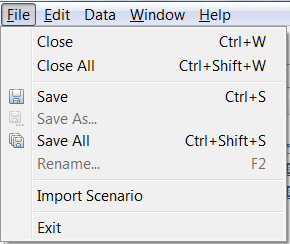
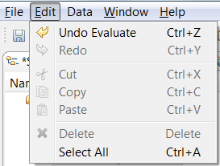
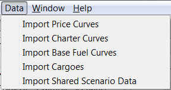
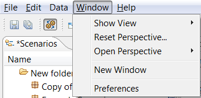

The main menu bar provides access to commands which are usually applicable, whichever part of the application window you are using. The menus available from the main menu bar are “File”, “Edit”, “Data”, “Window” and “Help”.

The “File” menu on the main menu bar shows some standard commands for managing scenarios. These allow a scenario (or all scenarios at once) to be closed, saved, or renamed. Note that there is no command for creating a new scenario or opening one on the filesystem: to open a scenario, it must be dragged into the Scenario Navigator from a Windows folder, or be copy-and-pasted into the Scenario Navigator.
New scenarios must be created by importing from CSV data. 
The “Edit” menu allows the most recent command to be undone (and undone commands to be re-applied), as well as providing standard “Cut”, “Copy”, “Paste”, “Delete” and “Select All” commands.
The “Data” menu provides commands for importing some common data across one or more scenarios simultaneously. LNG price indices, charter pricing, and base fuel pricing can all be imported from a matching CSV file using the Bulk Import dialog. 
The “Window” menu allows switching between perspectives and selecting Views for Display. 
Tip: Use the View sub-menu to retrieve views that have been closed accidentally.
Tip: Use Reset perspective to return the screen to its default layout.